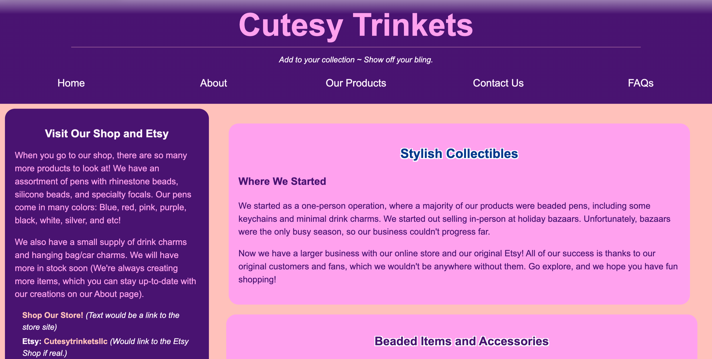
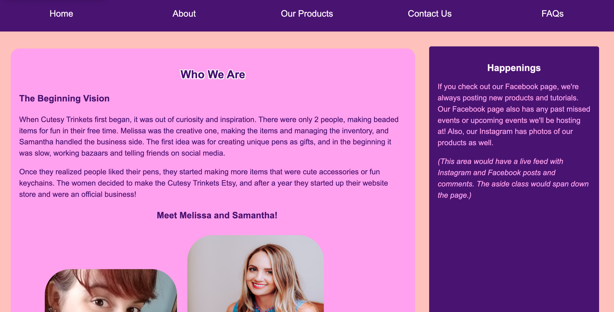
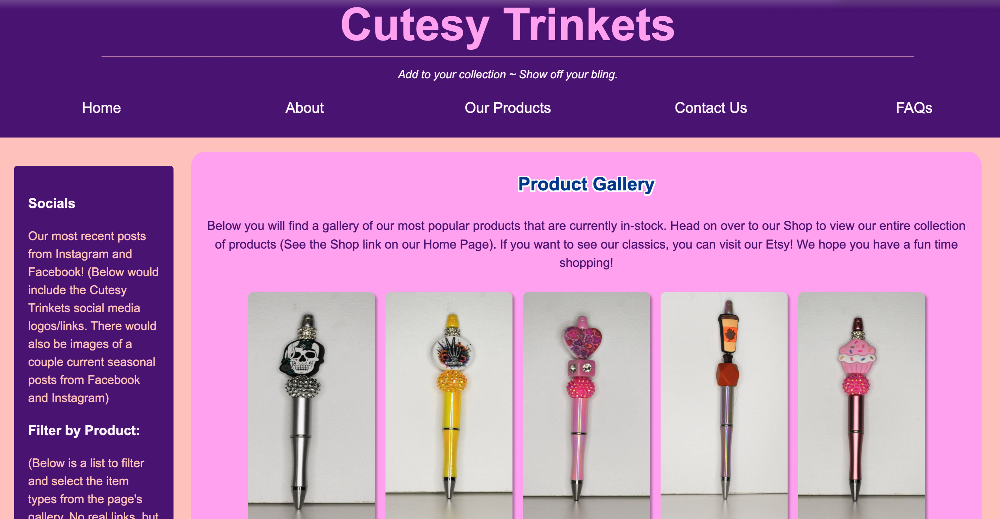
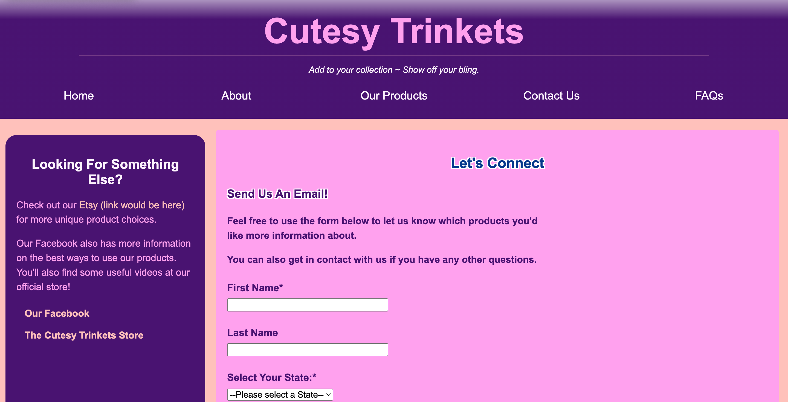
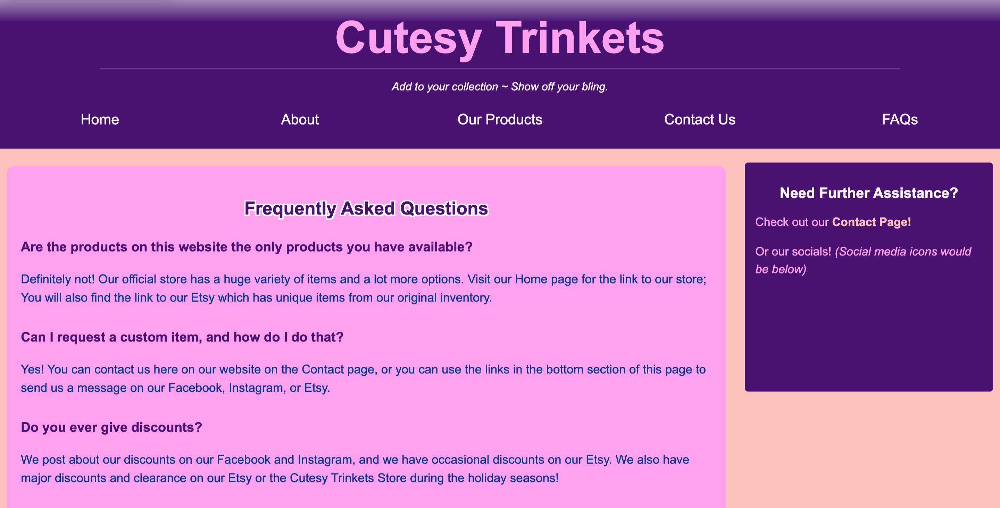

transp.png)





Cutesy Trinkets Website Project
This project is a fully coded multi-page website that I coded with HTML and CSS. The website is for a mock company called Cutesy Trinkets. The company focuses on selling unique beaded accessories and pens. I chose the fake company Cutesy Trinkets based on my actual Etsy shop Cutesy Collectibles. In 2025 I took a web development class in HTML and CSS as a refresher class. I had taken beginning web development in 2012 in the past, but it had been such a long time since then. The project goal was to create a mock website of anything we wanted, and it had to include multiple pages and an image gallery. Check out my Etsy shop